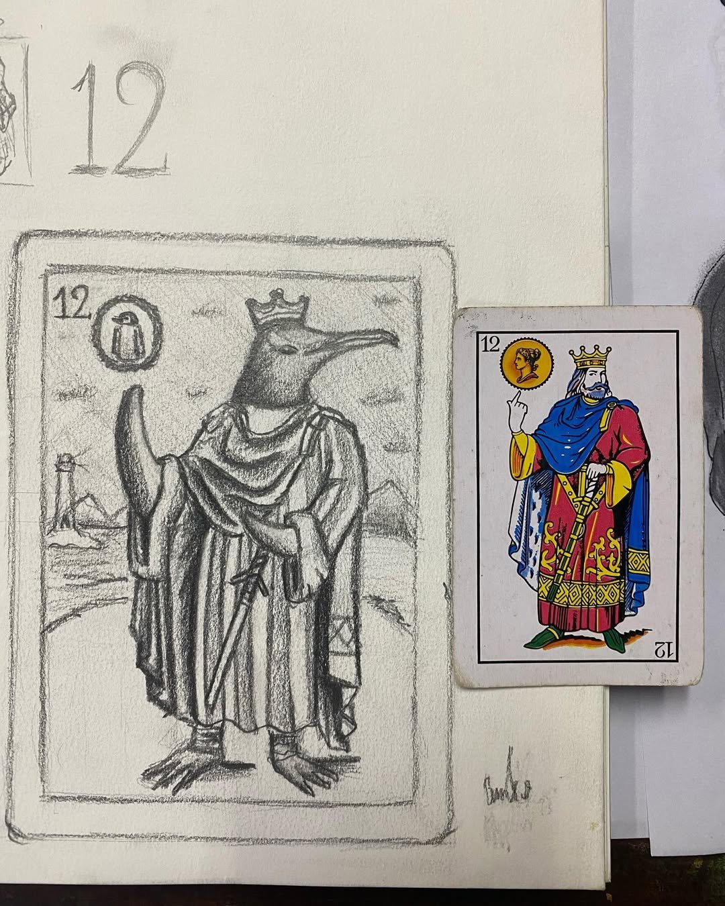
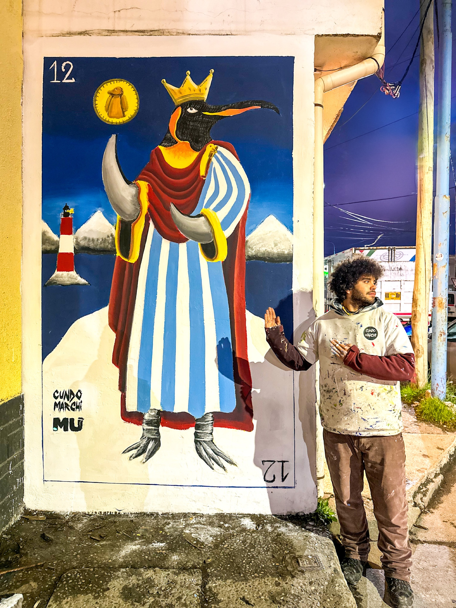
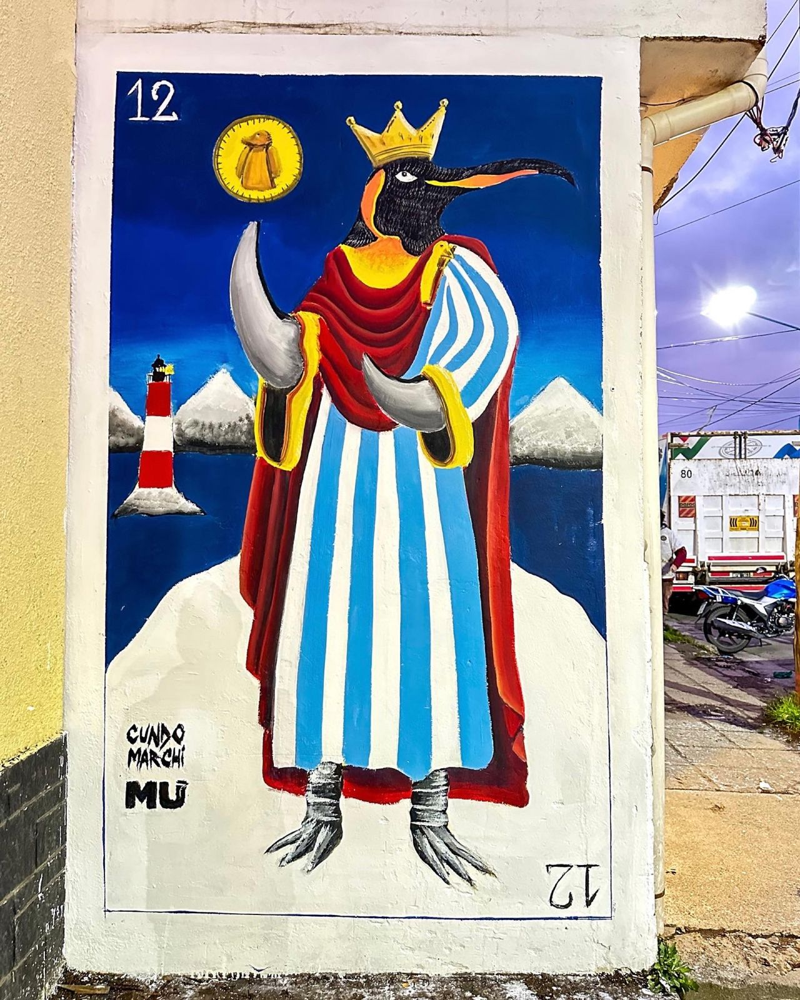
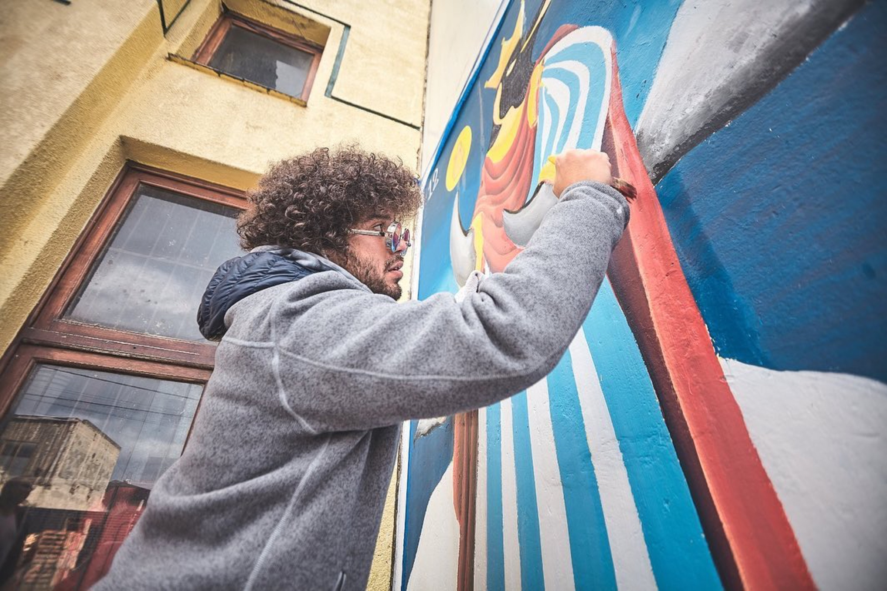
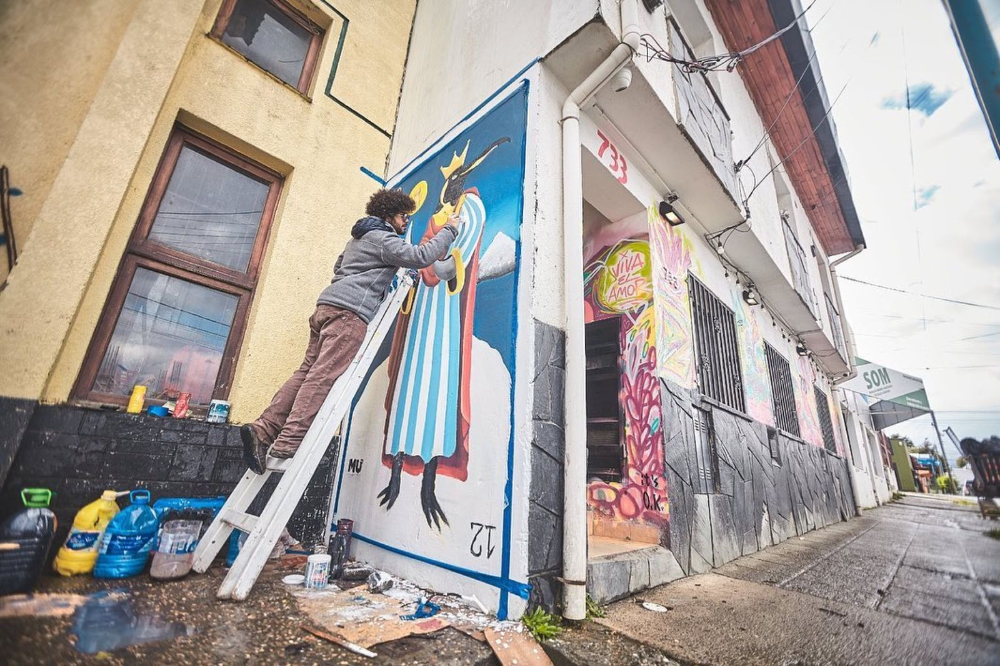
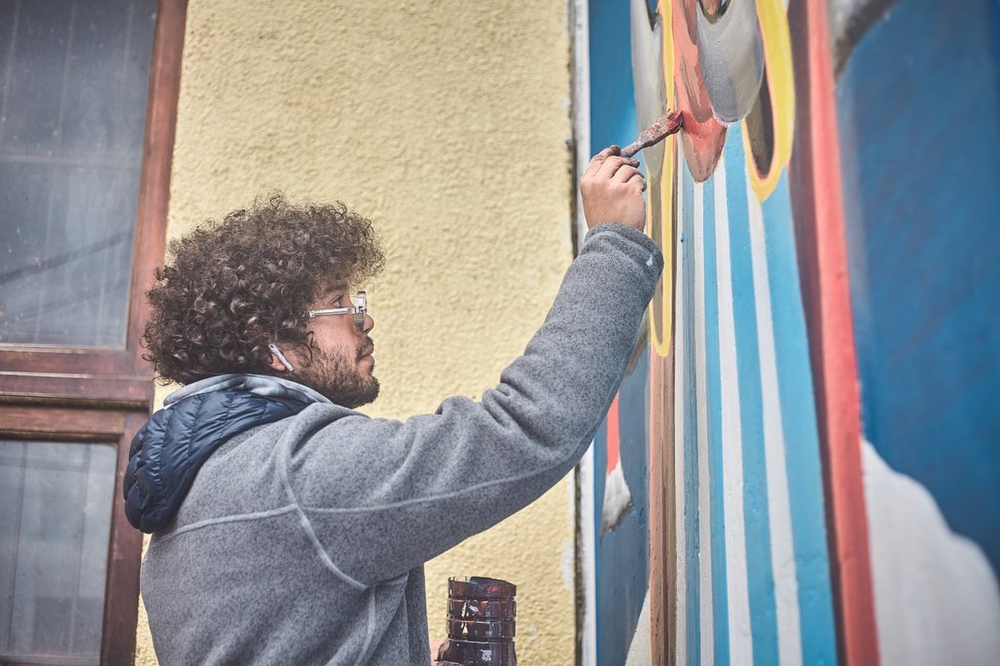

The King of Kings

Painted for the Emush Mural Event at the end of the world, Ushuaia, Tierra del Fuego, the southernmost tip of Argentina. The brief started as a local penguin, but I wanted to make it uniquely Argentinian: a king. In the Spanish deck used for Truco, Argentina's classic card game, the king card is the 12, so the penguin became the 12, crowned, wrapped in a cape in the colors of the Argentine flag, holding a coin stamped with a baby penguin. The name, "The King of Kings," is a nod to the year before the mural was painted, when Argentina became world champions of football. And on the morning I started painting, an Emperor Penguin, a species almost never seen this far from Antarctica, appeared in the bay of Ushuaia, as if the wall already knew what it wanted to become.





